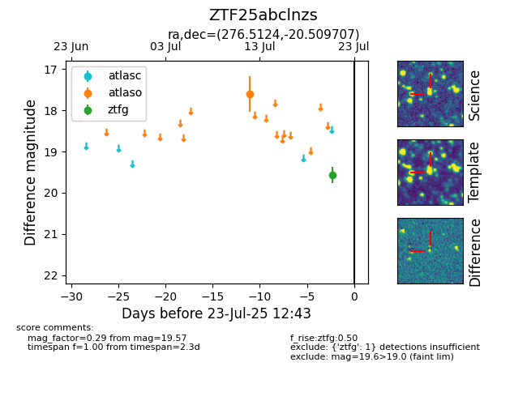

Target ZTF25abclnzs at 2025-07-23 12:43, see:
FINK: fink-portal.org/ZTF25abclnzs
Lasair: lasair-ztf.lsst.ac.uk/objects/ZTF25abclnzs
ALeRCE: alerce.online/object/ZTF25abclnzs
alt names
ZTF25abclnzs (ztf,fink)
coordinates:
equatorial (ra, dec) = (276.5124,-20.50971)
galactic (l, b) = (11.8404,-3.87669)
photometry
last atlaso=17.61, ztfg=19.57
1 atlaso, 1 ztfg detections
